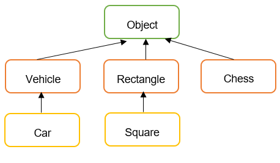
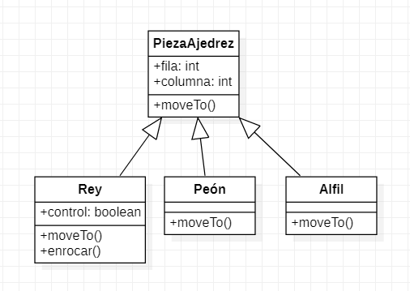

Herencia
Cuando tenemos una clase con una serie de características y nuestro programa se actualiza o amplia, tal vez se necesita de una clase con unas características similares, como por ejemplo, Ordenador, posee un ram, cpu, tamaño de disco, etc.
Si ahora queremos añadir la clase Tablet Android en nuestro sistema, como posee todas esas características de ordenador además de algunas específicas, copiaríamos todo lo que hay en ordenador y agregaríamos lo que fuera específico para Tablet. Lo mismo tendríamos que realizar si añadiéramos Pórtatil Mac. Como te habrás dado cuenta, este proceso genera mucho código repetido. Y arreglar un error en él puede ser también complicado. Para ello utilizamos la herencia.
¿Cómo se relacionan las clases entre sí? En Java, y en cualquier otro lenguaje orientado a objetos, las clases se organizan en una jerarquía de clases. Una jerarquía de clases es como un árbol al revés. En lo más alto de la jerarquía se encuentra la clase más general, en Java, la clase Object. Las clases debajo de Object en la jerarquía se conocen como sus subclases. Dado que todos los objetos que usamos en nuestros programas pertenecen a una clase u otra, esto es como decir que todos los objetos son Object.

En Java, todas las clases heredan de la clase java.lang.Object.
La Figura muestra el concepto de jerarquía de clases. Observa que la clase Object se encuentra en la parte superior de la jerarquía. Es la clase más generalizada. Tiene características que son comunes a todos los objetos Java. A medida que desciende en la jerarquía, las clases se vuelven cada vez más específicas. Un rectángulo es un objeto, pero contiene atributos (largo y ancho) que son comunes a todos los rectángulos, pero no a otros objetos de la jerarquía. Por ejemplo, un objeto Vehicle no tiene necesariamente una longitud y una anchura.
También está la clase Square en la jerarquía. Un Square (cuadrado) es un tipo especial de rectángulo, es decir, uno cuyo largo es igual a su ancho.
Usando la terminología asociada con este tipo de jerarquía, decimos que la clase Rectangle es una subclase de la clase Object. La clase Square es una subclase de Rectangle y Object. Se dice que las clases que se encuentran por encima de una clase dada en la jerarquía son sus superclases.
Por lo tanto, la clase Rectangle y también Object es una superclase de la clase Square.
En general, decimos que una subclase extiende una superclase, lo que significa que agrega elementos adicionales (atributos y / o métodos) a los contenidos en sus superclases. Como el caso de la clase
Squareque agrega la característica de que su largo y ancho son siempre iguales.
Hay tres conjuntos de terminología para describir las relaciones de herencia:
- padre / hijo
- clase base / clase derivada
- superclase / subclase

El concepto importante asociado con una jerarquía de clases es la noción de herencia de clases, mediante la cual una subclase hereda elementos (atributos y / o métodos, excepto el constructor) de sus superclases.
Nota
Los atributos y métodos declarados como private no se heredan.
Para ilustrar cómo funciona la herencia pensemos en un ajedrez. Hay varios tipos diferentes de piezas de ajedrez. Hay peones, caballeros, reinas y reyes. Un par de atributos que todas las piezas de ajedrez tienen en común es su posición de fila y columna en el tablero de ajedrez. Debido a que todas las piezas de ajedrez tienen estos atributos en común, habrá una clase en la jerarquía superior llamada PiezaAjedrez con estos atributos que serán heredados por todas las subclases de PiezaAjedrez.
Una de las acciones que todas las piezas de ajedrez tienen en común es que pueden moverse a una casilla determinada del tablero de ajedrez. Pero los diferentes tipos de piezas de ajedrez tienen diferentes formas de moverse. Por ejemplo, un alfil solo puede moverse a lo largo de diagonales en el tablero de ajedrez, mientras que una torre solo puede moverse a lo largo de una fila o columna en el tablero de ajedrez. Entonces, claramente, no podemos describir un método moveTo() que funcione para todas las piezas de ajedrez. Es por eso que colocamos el método moveTo() en todas las subclases de PiezaAjedrez. La clase PiezaAjedrez también tiene un método moveTo(), pero tenga en cuenta que su nombre está en cursiva. Esto indica que no se puede definir completamente a ese nivel.
En el ajedrez, el rey tiene ciertos atributos y acciones especiales. Por tanto, sólo el rey puede ser puesto bajo control. Esto significa que el rey está siendo atacado y en peligro de ser capturado, poniendo fin al juego. Del mismo modo, solo el rey tiene la capacidad de enrocar. Este es un movimiento especial que un rey puede realizar junto con una de sus torres bajo ciertas condiciones.
Por lo tanto, la clase Rey tiene ciertas características particulares.

En los diagramas, la flecha apunta del hijo al padre y muestra la relación "es-un". La flecha apunta a la clase principal de la clase secundaria. La imagen se puede leer como "un rey es una pieza de ajedrez".
Como vemos, una jerarquía de clases representa una especialización de clases a medida que avanza de arriba hacia abajo. La clase más general, PiezaAjedrez, está en la parte superior de la jerarquía. Sus atributos y métodos se transmiten (heredan) sus subclases. Sin embargo, además de los atributos y métodos que heredan de sus superclases, las subclases definen sus propios atributos y métodos especiales. Cada una de las subclases, Peón, Alfil, etc., representa algún tipo de especialización de la superclase.
Herencia simple
En Java, (a diferencia de los humanos) los hijos heredan características de un solo padre. A esto se le llama herencia simple. Aunque algunos lenguajes de programación permiten que una clase hija herede de más de una clase padre. A esto se le llama herencia múltiple. Con la herencia múltiple, a veces es difícil saber qué padre contribuyó con qué características al hijo. Java evita estos problemas mediante el uso de herencia simple.
Una clase padre puede tener múltiples hijos.
La herencia es entre clases, no entre objetos.
Sintaxis herencia en Java - extends
La sintaxis para heredar de una superclase es:
public class Child extends Parent {
// los nuevos miembros y constructores de la clase hija van aquí
}
Los miembros (variables y métodos) de la clase padre se incluyen automáticamente en el hijo por herencia. Si se quieren agregar miembros adicionales en la clase hija se hace en su definición de clase.
Las clases declaradas como final no pueden ser extendidas.
Ejemplo clase Animal
Vamos a crear una clase base Animal que tendrá una serie de características comunes para todos los animales como puede ser, nombre, peso, tamaño, etc.
public class Animal {
private String name;
private int size;
private int weight;
public Animal(String name, int size, int weight) {
this.name = name;
this.size = size;
this.weight = weight;
}
//getters y setters
}
Ahora queremos crear un tipo de animal Dog que contendrá todas las características (atributos y métodos) de la clase Animal:
public class Dog extends Animal {
}
Cuando creamos una subclase, necesitamos llamar al constructor de la superclase para inicializarla, ya que hereda de ella. Así que tendremos que crear el constructor en la clase Dog que llame dentro al constructor de la superclase (Animal):
public class Dog extends Animal {
public Dog(String name, int size, int weight) {
super(name, size, weight);
}
}
Al crear una clase hija Dog que hereda de la clase padre Animal, lo que estamos haciendo es heredar todo su comportamiento (atributos y métodos) y además nos permite añadir atributos específicos y únicos para esa clase hija que son particulares de los perros y no comunes o aplicables a todos los animales.
Super keyword
La palabra reservada super se utiliza para llamar al constructor de la clase de la que estamos heredando, es decir, llamar a la clase padre o superclase. En nuestro caso, para invocar al constructor de la superclase Animal.
Esto nos permite inicializar la clase Animal, ya que Dog es una clase derivada que se basa en ella.
La primera línea dentro del constructor de la clase hija debe ser la llamada al constructor padre con super().
Si no se especifica explícitamente entonces el compilador Java llama por defecto a super();, es decir, al constructor por defecto (sin argumentos) de la clase padre.
Si el padre no tiene un constructor sin argumentos, entonces provoca un error.
Note
Si se proporciona un constructor con parámetros en una clase, el compilador de Java no creará automáticamente el constructor sin parámetros.
En la clase hija vamos a crear algunos campos específicos para los perros como ojos, piernas, etc. Porque recuerda que no todos los animales tienen piernas u ojos pero si todos los perros.
public class Dog extends Animal {
private int eyes;
private int legs;
private int tail;
public Dog(String name, int size, int weight) {
super(name, size, weight);
}
}
Además de los campos que se necesitan para crear un objeto Animal, también hay que inicializar los campos propios de la clase Dog en el constructor:
public class Dog extends Animal {
private int eyes;
private int legs;
private int tail;
public Dog(String name, int size, int weight, int eyes, int legs, int tail) {
super(name, size, weight);
this.eyes = eyes;
this.legs = legs;
this.tail = tail;
}
}
En la clase base, vamos a añadir comportamiento, que será común para todos los animales, comer y moverse:
public class Animal {
private String name;
private int size;
private int weight;
public Animal(String name, int size, int weight) {
this.name = name;
this.size = size;
this.weight = weight;
}
public void eat() {
//código
}
public void move() {
//código
}
}
Al hacer esto, y crearlos como public (protected también serviría), significa que ahora están disponibles en la clase Dog automáticamente. Es decir, el método eat y move se hereda a la clase Dog.
Probar funcionamiento
Vamos a probar cómo funciona la herencia, para ello creamos un clase Main con un método main.
public static void main(String[] args) {
Animal animal = new Animal("", 0, 1);
Dog dog = new Dog("Maxi", 2, 5, 2, 4, 1);
}
Vemos que crear un animal no tiene mucho sentido, puesto que no sabemos mucho sobre él. Cuando creamos un perro, podemos ser más específicos en nuestra definición y dar valores relativos solo para perros.
Además, desde perro tenemos acceso a los métodos definidos en la clase padre (Animal) como públicos o protected. Por ejemplo, dog.eat() invocará al método comer que se encuentra en la clase padre, ya que la clase Dog no tiene ningún método eat.
Sobreescribir métodos de la clase padre en los hijos
La herencia nos aporta la opción de la sobreescritura de métodos. Es decir, redefinir los métodos de una clase padre en las clases hijas.
Por ejemplo, en la clase Dog podemos sobreescribir el método eat() con una funcionalidad más específica.
El IntelliJ nos ofrece un atajo para sobreescritura de métodos. Botón derecho --> Generate...


IntelliJ nos muestra todos los métodos que están en la clase Animal y podemos sobreescribir:

Si seleccionamos el método eat(), tenemos:
public class Dog extends Animal {
private int eyes;
private int legs;
private int tail;
public Dog(String name, int size, int weight, int eyes, int legs, int tail) {
super(name, size, weight);
this.eyes = eyes;
this.legs = legs;
this.tail = tail;
}
@Override
public void eat() {
super.eat();//Código que se crea automáticamente y llama al método eat de la clase padre
}
}
Ahora la clase hija Dog tiene su propio método eat() con código específico para esta clase.
public class Dog extends Animal {
private int eyes;
private int legs;
private int tail;
public Dog(String name, int years, int weight, int eyes, int legs, int tail) {
super(name, years, weight);
this.eyes = eyes;
this.legs = legs;
this.tail = tail;
}
//Método privado solo de la clase Dog
private void chew() {
}
@Override
public void eat() {
System.out.println("Dog eat");
chew();
super.eat();
}
}
En términos de sobreescritura, debemos de llevar cuidado con el método que se invoca:
public class Dog extends Animal {
private int eyes;
private int legs;
private int tail;
public Dog(String name, int years, int weight, int eyes, int legs, int tail) {
super(name, years, weight);
this.eyes = eyes;
this.legs = legs;
this.tail = tail;
}
//Método privado solo de la clase Dog
private void chew() {
}
@Override
public void eat() {
System.out.println("Dog eat");
chew();
super.eat();
}
public void walk() {
move();
}
}
Si no sobreescribimos el método move() en la clase Dog, cuando lo invocamos dentro del método walk() se llamaría al método de la clase Animal.